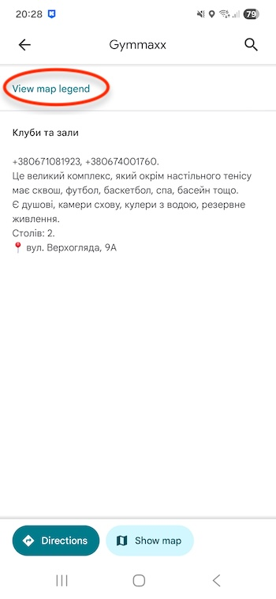
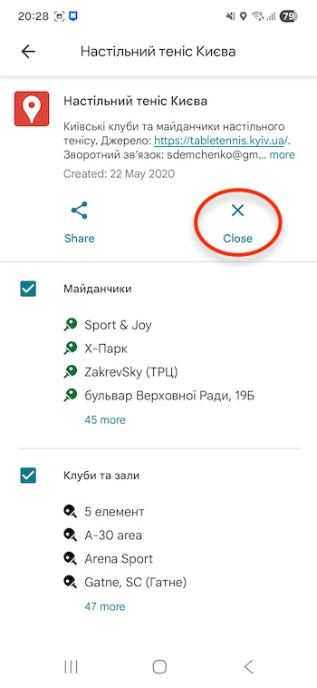

| Назва | Стислий опис | Адреса |
|---|---|---|
| 5 елемент |
+380444959555, +380685023460, Фейсбук,
вебсайт,
профіль,
вигляд. Елітний фітнес-клуб; умови чудові, вартість відповідна. Є душові, камери схову, кулер з водою, резервне живлення. Столів: 7 |
вулиця Електриків, 29А |
| A-30 area |
+380948230504, Фейсбук,
вебсайт,
профіль,
вигляд. Клуб у підвальному приміщенні, вологе повітря, слабка вентиляція. Столів: 5 |
вулиця Ахматової, 30 |
| Arena Sport |
Вебсайт,
профіль.
Це тренажерний зал, де зокрема є тенісний стіл для гри та тренувань з тренером. У залі є кондиціонери, роздягальні, душові, сауна. Оренда столу вдвічі вища за більшість клубів. |
вулиця Воскресенська, 14А |
| Club 17 |
Телеграм,
профіль,
вигляд. Це спільнота гравців, які регулярно грають турніри в ліцеї "Мрія" (колишня школа №17). Клуб має внутрішній рейтинг та іноді грає командні зустрічі проти інших клубів. Клуб має генератор, тому світло є завжди. Клуб забезпечує всі матчі тризірковими мʼячами DHS. Столів: 6 |
вул. Тищенко, 10, Ірпінь |
| Gatne, SC |
+380505578935, +380664203739, Фейсбук,
YouTube,
Інстаграм,
профіль,
вигляд у Гатному,
вигляд у Юрівці. Клуб анонсує турніри в приватній Телеграм-групі "SC GATNE Table Tennis (Турніри)". Клуб спеціалізується на тренуванні дітей. Набирають дітей з 6 років. Серед тренерів - кілька майстрів спорту міжнародного класу. Філія у Юрівці має дві роздягальні, 4 душові кабіни, санвузли, вентиляцію, осушувач повітря, підлогу Taraflex, чудове освітлення, питну воду. Столів: 6 (Юрівка) / 7 (Гатне́) |
вулиця Шевченка, 3 (Юрівка) / вулиця Космонавтів, 1 (Гатне) |
| Grand-Prix |
+380952823205, +380442302000, +380442986270,
вебсайт,
Телеграм (турніри),
Фейсбук,
профіль,
вигляд. Це великий комплекс, який окрім настільного тенісу має великий теніс, бадмінтон, сквош, басейн тощо. Є душові, камери схову, кулери з водою, резервне живлення. Столів: 5-6 |
вулиця Володимирська, 101 |
| Gymmaxx |
+380671081923, +380674001760, вебсайт,
профіль. Це великий комплекс, який окрім настільного тенісу має сквош, футбол, баскетбол, спа, басейн тощо. Є душові, камери схову, кулери з водою, резервне живлення. Столів: 2 |
вулиця Верхогляда, 9А |
| Himars |
+380685150000, Телеграм (головний), Телеграм (інвентар),
профіль,
вигляд. Клуб "Himars", також відомий під назвою "David Club Table Tennis", — один із провідних та найкраще облаштованих клубів Києва. Кілька команд клубу беруть участь у всеукраїнських змаганнях та в київській лізі. У клубі є кондиціонери, які працюють навіть у блекаути, осушувачі повітря, душові, резервне живлення, бомбосховище. Столів: 8 |
Берестейський проспект, 38, Палац культури, вхід ліворуч |
| KUTT |
Телеграм (головний), Телеграм (культура),
Інстаграм,
ціни,
профіль,
вигляд. Є лаунж-зона, настільний футбол, Wi-Fi, резервне живлення, резервне опалення, 200-дюймовий екран для перегляду спортивних подій, кікер, професійне світло та звук, затишний камін у лаунж-зоні, DJ-сети з енергійною музикою, бар з крафтовими напоями. Клуб працює щодня з 18:30 до 22:00, але припиняє роботу на час повітряної тривоги. Столів: 4 |
вулиця Кудрявська, 16А, другий поверх. Шлях до будівлі. |
| Orion |
+380733276110, вебсайт, Фейсбук,
Інстаграм,
профіль,
вигляд. Телеграм - Оріон Інфо, Телеграм - Оріон. Загальна., Телеграм - Orion Community. Один із найбільших тенісних клубів Києва. Останні роки клуб лідирує за кількістю турнірів щотижня. Клуб має відеотрансляцію, кондиціонери, осушувачі повітря, душові, камери схову, кулер з водою, Wi-Fi, резервне живлення. Столів: 16 |
вулиця Бальзака, 66 |
| Ping Pong Point |
+380960973199,
вебсайт,
Фейсбук,
Інстаграм 1,
Інстаграм 2,
вигляд. Є душ, камери схову, кулер з водою. Столів: 2 |
вулиця Мишуги, 3В |
| Podacha#9 |
Телеграм, вигляд. Клуб має окремі роздягальні, кілька душових та туалетів. Кількість місць для паркування обмежена. Столів: 4 |
вулиця Євгена Коновальця, 36Е. Від метро "Печерська" пішки 7 хвилин. |
| Podolskiy |
+380504616178, +380504882537, вебсайт,
Фейсбук,
профіль,
вигляд. Це великий фітнес-клуб, у якому є окремий великий ігровий зал, де за потреби розкладають столи для настільного тенісу. Клуб має резервне живлення, сауну, хамам, кондиціонери, фени, рушники. Столів: 4 |
вулиця Ярославська, 56А |
| Pulse |
+380952110031, +380969711236, вебсайт,
Телеграм,
Фейсбук,
Інстаграм,
профіль,
вигляд. Pulse — це школа настільного тенісу, яка спеціалізується на тренуванні дітей від 10 до 17 років. Також є групи для дорослих та інклюзивні групи. Школа має резервне живлення, резервне опалення, душові, роздягальні. Столів: 6 |
проспект Повітряних Сил, 80, третій поверх |
| Quiks |
+380985787777, Телеграм, Інстаграм,
ціни,
профіль,
вигляд. Є паркінг, зручна та швидка розвʼязка, професійні столи, 2 душові, 2 роздягальні, камери схову, чудове підлогове покриття, вентиляція, резервне живлення, резервне опалення, гаряча вода, кава та чай. Клуб часто транслює турніри на YouTube, але посилання на трансляцію щоразу різне. Клуб працює з 9:00 до 21:00. Столів: 6 |
вулиця Ясна, 8, другий поверх (вхід ліворуч від входу до "Фори") |
| Raketnik |
Telegram,
вигляд. Зал призначений для тренувань учасників спільноти, має один професійний стіл, чудове покриття підлоги, кондиціонер, осушувач повітря та питна вода. Столів: 1 |
вул. Григорія Сковороди 11/4 (ЖК Синергія 3), Ірпінь |
| TT Republic |
+380688503949 (Іван Архіпов), +380967230026,
Телеграм, Інстаграм,
забронювати заняття,
профіль,
вигляд. Клуб має комфортний зал, професійні столи, професійне освітлення, резервне живлення та працює щодня з 10 до 22. Примітка: під час повітряної тривоги до торговельного центру, в якому знаходиться клуб, зайти неможливо. Столів: 6 |
Кільцева дорога, 1, другий поверх, зал роледрому "Turboxspot" у ТРЦ "Respublika Park" |
| RSP |
+380964664667,
вебсайт,
ціни,
профіль,
вигляд. Телеграм - Групові тренування, Телеграм - Турніри, Телеграм - Ігрова група «Золотий стіл». Є душові, сауна, резервне живлення, камери схову, кулер з водою. "RSP" (стара назва "KRSP") — величезний комплекс, який окрім настільного тенісу має бадмінтон, падел, сквош, піклбол та інші види спорту. Столів: 4. |
вулиця Кіото, 25 |
| Setka Cup |
Вебсайт,
Фейсбук,
Інстаграм,
відеотрансляції,
вигляд. Клуб спеціалізується на щоденних комерційних турнірах. Є кондиціонери, осушувачі повітря, душові, камери схову, кулер з водою, кава та чай, Wi-Fi, резервне живлення. Столів: 4 |
Біля метро "Шулявська" |
| Spin Up |
Телеграм,
вебсайт,
YouTube. Це спільнота гравців, які регулярно грають турніри у вихідні о 8 ранку в Himars або у Grand-Prix, або Quiks, або ДБК-3. Клуб має внутрішній рейтинг, ліги, та іноді грає командні зустрічі проти інших клубів. |
|
| Tennis Room 1 |
+380636094506 (телефон і Вайбер),
Телеграм,
вебсайт, Фейсбук, Інстаграм, профіль, вигляд. Зал обслуговується без адміністратора. Є комфортабельна зона відпочинку, резервне живлення, Wi-FI, кондиціонер, санвузол, роздягальня, питна вода. Столів: 1 |
проспект Героїв Небесної Сотні, 40 — ЖК Львівський маєток (Софіївська Борщагівка) |
| Tennis Room 2 |
+380636094506 (телефон і Вайбер),
Телеграм,
вебсайт, Фейсбук, Інстаграм, профіль, вигляд. Зал обслуговується без адміністратора. Є комфортабельна зона відпочинку, резервне живлення, Wi-FI, кондиціонер, санвузол, роздягальня, питна вода, колонки для музики. Столів: 1 |
вулиця Малишка 102 — ЖК Софія (Софіївська Борщагівка) |
| Tennis Room 3 |
+380636094506 (телефон і Вайбер),
Телеграм,
вебсайт, Фейсбук, Інстаграм, профіль, вигляд. Зал обслуговується без адміністратора. Є комфортабельна зона відпочинку, резервне живлення, Wi-FI, кондиціонер, санвузол, роздягальня, питна вода, колонки для музики. Столів: 1 |
вулиця Боголюбова, 33 — ЖК Софіївська Слобідка (Софіївська Борщагівка) |
| Tennis Room 4 |
+380636094506 (телефон і Вайбер),
Телеграм,
вебсайт, Фейсбук, Інстаграм, профіль, вигляд. Зал обслуговується без адміністратора. Є комфортабельна зона відпочинку, резервне живлення, Wi-FI, кондиціонер, санвузол, роздягальня, питна вода, колонки для музики. Столів: 1 |
вулиця Матвія Донцова, 25В, Ірпінь |
| Tennis Room 5 |
+380636094506 (телефон і Вайбер),
Телеграм,
вебсайт, Фейсбук, Інстаграм, профіль, вигляд. Зал обслуговується без адміністратора. Є комфортабельна зона відпочинку, резервне живлення, Wi-FI, санвузол, роздягальня, питна вода, колонки для музики. Столів: 1 |
вулиця Загорівська, 42/12 |
| Tennis Room 6 |
+380636094506 (телефон і Вайбер),
Телеграм,
вебсайт, Фейсбук, Інстаграм, профіль, вигляд. Зал обслуговується без адміністратора. Є комфортабельна зона відпочинку, резервне живлення, Wi-FI, санвузол, роздягальня, колонки для музики, питна вода, кондиціонер. Столів: 1 |
вулиця Вахтанга Кікабідзе, 11 |
| Toni-Tops |
+380974002012, вебсайт. Клуб має 4 професійні столи, кондиціонер, резервне живлення, якісне професійне освітлення, швидкий Wi-Fi, бар із напоями та зону відпочинку. Турніри та заняття анонсуються у приватній Телеграм-групі "ТОНІ-ТОПС (клуб)". Столів: 4 |
вул. Одеська, 70, с. Крюківщина (вхід через більярдний клуб "Кий") |
| Top Spin (Бровари) |
+380661894321 Анонси та результати турнірів клубу Столів: 4 |
вулиця Броварської сотні, 9, Бровари (спорткомплекс "Світлотехнік") |
| TviY tennis |
+380686662058, вебсайт,
Телеграм (група),
Фейсбук,
Інстаграм,
профіль,
вигляд. Клуб має лаунж-зони з пуфиками, кондиціонер, резервне живлення, роздягальні та питну воду. Клуб працює з 7:00 до 23:00. Столів: 2 |
вулиця Олександра Олеся, 2 — ЖК Варшавський, перший поверх паркінгу |
| Барліг |
Телеграм,
Інстаграм,
вигляд. Клуб знаходиться у ЖК "Сирецькі сади". Детальніша інформація та запис на персональні тренування — в особисті повідомлення або на мобільний: Столів: 2 |
вулиця Івана Виговського, 10Ж (вхід №3) |
| Брейкс |
+380991071211, +380444117972, Телеграм,
вебсайт,
профіль,
вигляд. Клуб має резервне живлення, кондиціонери, дивани, роздягальню, туалет. Столів: 9 |
проспект Івасюка, 39В |
| Воля |
+380992540934,
Фейсбук,
профіль,
вигляд, Вайбер (бронювання столів, групові та індивідуальні тренування), Вайбер (гра на золотий стіл).
Клуб має резервне живлення, душову кабіну, холодильник із напоями, вентиляцію. Коли в клубі нема з ким пограти, адміністратор Олег іноді може безплатно скласти компанію. Під час повітряної тривоги до торговельного центру, в якому знаходиться клуб, зайти неможливо. Столів: 7 |
Воскресенський проспект, 36, ТРЦ "Квадрат NEO", третій поверх (сходи ліворуч від кінотеатру) |
| Голосіїв |
+380674025165, +380662533517, Телеграм,
профіль,
вигляд. Клуб має 6 професійних столів, душ, туалет. Столів: 6 |
вулиця Маричанська, 4. Вхід або центральний, або через ворота повз Здановської, 3. |
| Гурман |
+380443327878, Фейсбук,
Телеграм,
профіль,
вигляд. Клуб має окремі роздягальні, камери схову, душові, лавки для глядачів, резервне живлення, кулер з водою, каву та чай. Столів: 9-10 |
вулиця Нижньоюрківська, 31 |
| ДЮСШ №21 |
+380935592958 (Микола Миколайович Рибка),
Вайбер,
профіль,
вигляд. Школа має резервне живлення, душ із гарячою водою, кондиціонери. Столів: 5 |
вулиця Алматинська, 60, вхід через торцеві білі двері. |
| ДЮСШ №23 |
Фейсбук,
профіль,
вигляд. Є роздягальні та душові, але гарячої води часто нема. Резервного живлення нема, але вдень великі вікна дають достатньо світла. Столів: 5 |
проспект Червоної калини, 26А |
| ДЮСШ (Бровари) |
+380679432725, вебсайт,
вигляд. Столів: 3 |
вулиця Героїв України, 16 (ТД "Ліза"), м. Бровари |
| КМШВСМ |
+380445506017,
профіль,
вигляд. Київська міська школа вищої спортивної майстерності має легкоатлетичний манеж та зал настільного тенісу, але любителів не допускають, тут тренуються лише професіонали. Столів: 4-8 |
проспект Тичини, 18 |
| Колорит |
+380660585883, +380935153565 (Андрій Щеринський, тренер),
профіль,
вигляд. Клуб має дві роздягальні, резервне живлення, трибуну для глядачів. Столів: 2-4 |
Харківське шосе, 19, перший поверх ТЦ "Mega City". |
| Лідер (ДЮСШ) |
+380938469458, +380444038426, Фейсбук,
профіль,
вигляд. Після нещодавнього ремонту у школі приємно грати та тренуватися. У клубі є 4 кондиціонери, 2 роздягальні, професійні столи, чудове підлогове покриття. Столів: 10 |
вулиця Коласа, 15Б |
| Лідер (КМП) |
+380638209431 (клуб), +380931338990 (тренер), Фейсбук,
Інстаграм,
профіль,
вигляд. Турніри для всіх вікових груп, дитячі турніри, галерея дитячих турнірів. У клубі є кондиціонер, душ, туалет, безплатна питна вода. Столів: 5-6 |
проспект Гонгадзе, 32Г |
| Мастер |
+380672257255, вебсайт, Фейсбук,
Телеграм,
ціни,
профіль,
вигляд. Є душ, кулер з водою, безплатні чай та кава з молоком, лаунж-зона з пуфиками, резервне живлення. Столів: 4 |
вулиця Жилянська, 146, п'ятий поверх |
| Настільний теніс на Ревуцького |
+380972567902,
профіль,
вигляд. Столів: 4-5 |
вулиця Ревуцького, 5, вхід навпроти ресторану "Gaga". |
| Настільний теніс на Рудницького |
+380938011668,
профіль,
вигляд. Є резервне живлення. Столів: 3 |
вулиця Рудницького, 3А, вхід через магазин питної води |
| Настільний теніс у ЖК Софія |
+380638734426, вебсайт,
Телеграм,
Вайбер,
профіль,
вигляд. Зал обслуговується без адміністратора. Є кулер з водою, Wi-Fi, резервне живлення, колонка для музики з телефона, санвузол, пуфики. Столів: 1 |
вулиця Корольова, 2 |
| Настільний теніс у КНУБА |
+380637689211 (Артур), вигляд. Є душ, роздягальня, камери схову. Столів: 2 |
вулиця Освіти, 5 |
| Печерськ |
+380683570688 (Валентина Володимирівна), Фейсбук,
профіль,
вигляд. Також клуб має приватну Вайбер-групу "Настольный теннис Кловская" з анонсами та результатами турнірів. Є резервне живлення. Є кондиціонери, які працюють навіть у блекаути. Столів: 5-6 |
Печерський узвіз, 3 |
| Покоління |
+380679026818, +380950413831, Фейсбук,
YouTube,
Телеграм, вебсайт,
профіль. Професійні столи, 2 роздягальні, чудове підлогове покриття, вентиляція, резервне живлення. Столів: 5 |
бульвар Руденка, 14Ж |
| Ракетка |
+380661821519, +380445531604, +380500296663 (суддя турніру), Фейсбук,
Телеграм,
профіль,
вигляд. Професійні столи, 2 роздягальні, чудове підлогове покриття, кондиціонери, осушувачі повітря, душові, резервне живлення та тепло. Столів: 6-8 |
проспект Тичини, 15 |
| Солом'янка |
+380661662875 (Вайбер / Телеграм), також є Вайбер-група для турнірів, вебсайт,
профіль. У клубі є резервне живлення. Столів: 6 |
вулиця Солом'янська, 14 |
| Спорткомплекс ДБК-3 |
+380676781771,
профіль,
вигляд. Спорткомплекс на Відрадному має настільний теніс, басейн, душові та ін. Столів: 4 |
вулиця Олега Афанаса, 1 |
| Спорткомплекс ДБК-4 |
+380444309475, +380666451705, +380678708705 (Брік Андрій Васильович),
профіль,
вигляд. Є душові та сауна. Столів: 5 (у двох суміжних залах) |
вулиця Кульженків, 13 |
| Спорткомплекс НАУ |
+380673173617, +380503173617 (Верес Олександр Валерійович),
профіль,
вигляд. Є роздягальні та душові. Столів: 6 |
проспект Гузара, 1 |
| Спорткомплекс УДУ |
Фейсбук,
профіль,
вигляд. Спорткомплекс університету Драгоманова має кілька великих залів, роздягальні, душові, глядацькі трибуни. Саме в цьому спорткомплексі (одразу на кількох поверхах) проходять усі найбільші змагання з настільного тенісу. Столи для тенісу розкладають лише на час проведення змагань. Столів: 0-15 |
вулиця Кониського, 3/9 |
| Старт |
+380674430022,
профіль,
вигляд. Один з найдешевших клубів, по суті великий тент. Є питна вода. У будні клуб працює після 15:00. Столів: 7 |
вулиця Ростиславська, 2 |
| Твоя подача |
+380674478515 (мобільний та Вайбер), Інстаграм,
профіль. Клуб має роздягальню, душ і туалет. Столів: 3 |
32 павільйон ВДНГ |
| Орієнтир | Стислий опис | Ціна |
|---|---|---|
| Kink Bar |
Kink Bar
має стіл для настільного тенісу в окремому приміщенні. Місця трохи малувато, але пограти в негоду — чудовий варіант,
бо є дах над головою, освітлення та стільці для компанії.
Інстаграм,
ціни,
профіль. Також тут є ігрові автомати, настільні ігри, настільний футбол, смачні коктейлі. Вхід на Межигірській, 17: зайти в арку та повернути ліворуч. Столів: 1 |
50 гривень з людини безліміт |
| Sport & Joy | У Квадрат NEO є не тільки Воля, але й простір відпочинку "Sport & Joy" (на цокольному поверсі під ескалатором) з тенісним та більярдним столами. Для повноцінної гри в теніс тут місця замало, а для розваги цілком достатньо. Профіль, вигляд. | 60 грн / година |
| X-Парк |
У X-Парку є затишний майданчик між будівлями.
Профіль. Столів: 0-4 |
100 грн / година |
| ZakrevSky (ТРЦ) |
Два столи
у дитячому розважальному центрі "Парк Закревського Періоду". У вихідні багато дітей, грати неможливо. У будні, коли діти в школі, грати можна. Взагалі, це дитячий центр, дорослі тут навряд чи грають. Профіль. |
Вхід: дорослі 5 грн, діти 250 грн |
| Берестейський проспект, 134 |
Майданчик
зі столами 125 * 250 см.
Профіль,
вигляд. Столів: 2 |
0 грн |
| бульвар Верховної Ради, 19Б | Асфальтований майданчик із пʼятьома столами. Три столи мають нові стільниці, два інші — старі, трухляві. Вигляд. | 0 грн |
| бульвар Руденка, 14Д | Майданчик з одним чудовим столом. Вигляд. | 0 грн |
| Воскресенський проспект, 3 |
Два металеві столи 125 * 250 см біля стадіону.
Вигляд. Столів: 2 |
0 грн |
| вулиця Бальзака, 62 | Два столи 125 * 250 см на стадіоні. | 0 грн |
| вулиця Воскресенська, 14Д |
Майданчик
у ЖК "Паркові Озера" з двома столами біля турніків.
Гравці є майже щодня. Завсідники домовляються про час гри у групі Телеграм "Теніс ПО".
Вигляд. Столів: 2 |
0 грн |
| вулиця Воскресенська, 16Б | Майданчик у ЖК "Паркові Озера" з одним столом 125 * 250 см біля футбольного майданчика. Вигляд. | 0 грн |
| вулиця Гарматна, 38Б |
Майданчик
на пагорбі в парку "Орлятко". Середній стіл трухлявий, а крайні у відмінному стані.
Профіль,
вигляд. Столів: 2-3 |
0 грн |
| вулиця Гончара, 55Б |
Майданчик із якісними бетонними столами,
захищений від вітру пагорбами та багатоповерхівками.
Вигляд. Столів: 2 |
0 грн |
| вулиця Дашкевича, 2В | Майданчик зі спортивним покриттям та двома чудовими столами. Профіль, вигляд. | 0 грн |
| вулиця Доброхотова, 7 |
Біля будинку Доброхотова, 7, є два майданчики:
один з одного боку (два столи 125 * 250 см),
другий з протилежного (один трохи пошкоджений стіл 125 * 250 см).
Вигляд. Разом столів: 3 |
0 грн |
| вулиця Коласа, 5 | Майданчик з одним новим столом, захищений від вітру з двох боків багатоповерхівками. Стаціонарного освітлення нема, але над столом натягнуто мотузку, щоби вішати ліхтарики. Вигляд. | 0 грн |
| вулиця Куліша, 1 |
Майданчик
під навісом зі столами в ідеальному стані на Пантелеймона Куліша, 1.
Вигляд. Столів: 2 |
0 грн |
| вулиця Куліша, 5Б |
Майданчик
із металевим столом біля футбольного поля біля Пантелеймона Куліша, 5Б.
Вигляд. Столів: 1 |
0 грн |
| вулиця Куліша, 17 |
Майданчик
із двома столами біля кільцевої розвʼязки на розі вулиць Пантелеймона Куліша та митрополита Шептицького,
на одному столі шиферна стільниця пощерблена, на другому ціла. Захисту від вітру нема, освітлення теж.
Вигляд. Столів: 1-2 |
0 грн |
| вулиця Микільсько-Слобідська, 4Б |
Майданчик
між багатоповерхівками, частково захищений від вітру.
Вигляд. Столів: 1 |
0 грн |
| вулиця Микільсько-Слобідська, 6А |
Майданчик
між багатоповерхівками, частково захищений від вітру.
Вигляд. Столів: 1 |
0 грн |
| вулиця Микільсько-Слобідська, 63 |
Майданчик
у Зоні здоровʼя, частково захищений від вітру. Дуже приємна місцевина, поруч є дитячий майданчик, турніки,
скейт-парк,
пляж,
туалет.
Профіль,
вигляд. Улітку тут щовечора аншлаг. До 17:00 майданчик завжди порожній, але якщо хтось із завсідників хоче пограти вдень, вони про це пишуть у приватній Вайбер-групі "Своя гра". Столів: 2 |
0 грн |
| вулиця Оболонська, 12 | Майданчик з одним столом. Профіль, вигляд. | 0 грн |
| вулиця Парково-Сирецька, 12А | Асфальтований майданчик з одним столом між багатоповерхівками, які добре захищають його від вітру. Вигляд. | 0 грн |
| вулиця Сахравська, Крюківщина | Майданчик у парку з одним бетонним столом з металевою сіткою на розі вулиць Сахравської та Балукова. Профіль, вигляд. | 0 грн |
| вулиця Сверстюка, 10А |
Майданчик
біля метро "Лівобережна" з доволі непоганими столами (два поруч, третій за 10 метрів від них).
Вигляд. Столів: 3 |
0 грн |
| вулиця Тулузи, 6А | Майданчик із одним столом біля футбольного поля школи №222. Вигляд. | 0 грн |
| вулиця Урлівська, 23 | Майданчик із двома столами. | 0 грн |
| вулиця Януша Корчака, 23 | Майданчик на траві з одним столом. Вигляд. | 0 грн |
| вулиця Януша Корчака, 25 | Майданчик у дворі з одним столом. Вигляд. | 0 грн |
| Галактика, ЖК | Майданчик з двома столами 125 * 250 см біля футбольного поля. Ввечері майданчик достатньо освітлений. Вигляд. | 0 грн |
| Гідропарк - біля пляжу "Венеція" |
Столи:
|
0 грн |
| Гідропарк - за кортами великого тенісу |
Асфальтований майданчик
для пенсіонерів у глибині парку. Вигляд. Неподалік є туалети: безкоштовний та платний. Столів: 4 |
0 грн |
| Голосіївський парк |
Пагорби та дерева захищають майданчик
від вітру. Майданчик застелений килимовим покриттям. Вигляд. Гравці збираються щодня. Завсідники домовляються про час гри у Телеграм-чаті. Коли гравців забагато, грають парами. Неподалік є парк розваг і безплатний чистий туалет. Столів: 5 |
0 грн |
| Кафе "Каштан" |
Майданчик
з одним бетонним столом, захищений від вітру багатоповерхівками.
Вигляд. Столів: 1 |
0 грн |
| Квітневий провулок, 1Б | Два майданчики у суміжних дворах між 16-поверховими будинками, по два трохи менші за стандарт столи на кожному майданчику. | 0 грн |
| Києво-Могилянська академія |
Майданчик
на Контрактовій площі, прямо перед Національним Університетом "Києво-Могилянська академія". Є вечірнє освітлення.
Профіль,
вигляд. Столів: 3 |
0 грн |
| Куренівський парк | Майданчик з двома металевими столами; не захищений від вітру. | 0 грн |
| Міністерський клуб |
Майданчик з одним столом у мальовничій лісовій зоні.
Профіль,
вигляд, 360°. Спортивний клуб Міністерський ліс, +380675487266. |
0 грн |
| Озеро Радунка | Майданчик із чотирма столами 125 * 250 см. Дуже популярний серед місцевих жителів. Вечірнє освітлення слабеньке, але грати можна. Профіль, вигляд, вигляд поночі. | 0 грн |
| Парк Веселка |
Дуже популярний майданчик
із бетонними столами.
Профіль,
вигляд. Вечірнє освітлення є, але не ідеальне.
Не захищений від вітру. Покриття ґрунту частково зіпсувалося.
Неподалік є туалет у відмінному стані. Столів: 4 |
0 грн |
| Парк Кіото | Майданчик із двома столами 125 * 250 см. Профіль. | 0 грн |
| Парк Наталка | Майданчик із двома столами, ввечері достатньо освітлений і дуже популярний; не захищений від вітру. | 0 грн |
| Парк Параджанова |
Майданчик
у парку імені Сергія Параджанова (колишня назва — "Юність").
Профіль,
вигляд.
Парк розташований у низині, до того ж у ньому багато дерев, а довкола — багатоповерхівки, тому навіть у вітряний день тут затишно. Столів: 12 |
0 грн |
| Парк Партизанської Слави | Майданчик із двома металевими столами. Ґрунт укрито спортивним покриттям. Є вечірнє освітлення. Профіль, вигляд. | 0 грн |
| Парк Перемога (Бровари) | Майданчик із шістьома столами. Вигляд. | 0 грн |
| Парк Перемога (Київ) | Майданчик, на якому в теплу половину року за доброї погоди ставлять до девʼяти столів. Години роботи: 15:00 — 21:00. Вигляд. | 170 грн / година |
| Парк Самосад |
Майданчик
на Спаській має два столи, частково захищені від вітру, ввечері освітлені.
Гравці тут є щовечора, більшість із них — початкового рівня. Сітки зберігаються у пабі "Портер".
Завсідники почасти домовляються про час гри в Телеграм-групі Настільний теніс Києва. Профіль, вигляд. |
0 грн |
| Парк Совки |
Надзвичайно популярний майданчик біля турніків,
за 50 метрів від футбольного поля у парку "Со́вки". Над деякими столами натягнуто мотузки, щоби можна було почепити ліхтарики.
Парк доволі густий, вітру не відчувається.
Профіль,
вигляд. Примітка: від метро до парку навпростець пройти неможливо через низку суміжних закритих територій. Столів: 5 |
0 грн |
| Політехнічний провулок, 3 |
Майданчик з одним металевим столом.
Профіль,
вигляд.
Майданчик розташований у низині та оточений багатоповерхівками, тому навіть у вітряний день тут дуже затишно. Столів: 1 |
0 грн |
| проспект Правди, 17А | Майданчик з одним металевим столом на траві. Поруч — новий майданчик із турніками. | 0 грн |
| проспект Свободи, 2 | Майданчик з двома металевими столами, трохи меншими за стандарт | 0 грн |
| проспект Червоної Калини, 14/13 | Майданчик з одним столом на ґрунті біля турніків і шахів | 0 грн |
| проспект Шухевича, 4 | Майданчик з одним столом на ґрунті біля футбольного поля. | 0 грн |
| проспект Шухевича, 14 | Майданчик біля футбольного поля. Один стіл стоїть на спортивному покритті, другий на траві. Вигляд. | 0 грн |
| проспект Шухевича, 30А | Майданчик із трьома столами, захищений від вітру багатоповерхівками. Профіль, вигляд (2020), вигляд (2026). | 0 грн |
| Русанівська коса |
Майданчик
із чотирма повнорозмірними столами поруч із дитячим майданчиком.
Завдяки підтримці депутата Олеся Маляревича встановлено нові стільниці від "Інтератлетики".
Профіль,
вигляд. Пенсіонери тут грають переважно з 11 до 14 години, а ті, хто працює, — з 17 до пізнього вечора. Завсідники домовляються про час гри у приватному Телеграм-чаті "Теннис Русановка". |
0 грн |
| Сквер Героїв Севастополя |
Майданчик
на ґрунті в парку зі столами у доброму стані.
Вигляд. Столів: 2 |
0 грн |
| Спортмайданчик НАУ |
Майданчик
"NAU gym" має освітлення, непогано захищений від вітру пагорбами, деревами та парканом.
Телеграм, Інстаграм,
профіль,
вигляд. Столів: 2 |
0 грн |
| Соломʼянський ландшафтний парк |
Майданчик на пагорбі,
який оточений ще вищими пагорбами, завдяки чому навіть у вітряний день тут відносно затишно.
Профіль,
вигляд. Столів: 7 |
0 грн |
| Урбан-парк ВДНГ |
Майданчик
зі столами Donic Galaxy Outdoor, спортивне покриття, достатньо місця, і надвечір умикається освітлення.
Не захищений від вітру; земля нерівна, тому висота на всіх столах різна. Вигляд. Столів: 8 |
0 грн |
| Хвильовий |
Бар "Хвильовий" (HVLV) має стіл для настільного тенісу
у внутрішньому дворику.
Бар регулярно залучає його до вікендових заходів із живими DJ-сетами та пивпонгом. Інстаграм, профіль, ціни, вигляд. Столів: 1 |
0 грн? |
Якщо у вас нема рейтингу ФНТУ, і на рейтинговому турнірі ви виграєте у гравця з рейтингом, ФНТУ порахує і присвоїть вам рейтинг.
Дитячі рейтингові турніри часто проводять у кількох категоріях, наприклад:
діти 2012 року народження та старші, 2014 року народження та старші тощо (або U11, U13, U15 тощо).
Рейтингові турніри серед ветеранів настільного тенісу теж часто проводять у кількох категоріях: 40 років та старші, 50 років та старші тощо.
Переваги цього виду змагань:
Тим, хто тренується з тренером, тренер порадить гідний інвентар.
Тих, хто не тренується і не планує, слід застерегти від ракеток із супермаркету, бо існує безліч у рази кращих альтернатив. Тут наведені деякі з найдешевших пристойних варіантів тим, хто поки не орієнтується в інвентарі.
{kind=link}
{kind=link}
{kind=link}
{kind=link}
{kind=link}
{kind=link}
{kind=link}
{kind=link}
{kind=link}
{kind=link}
{kind=link}
{kind=link}